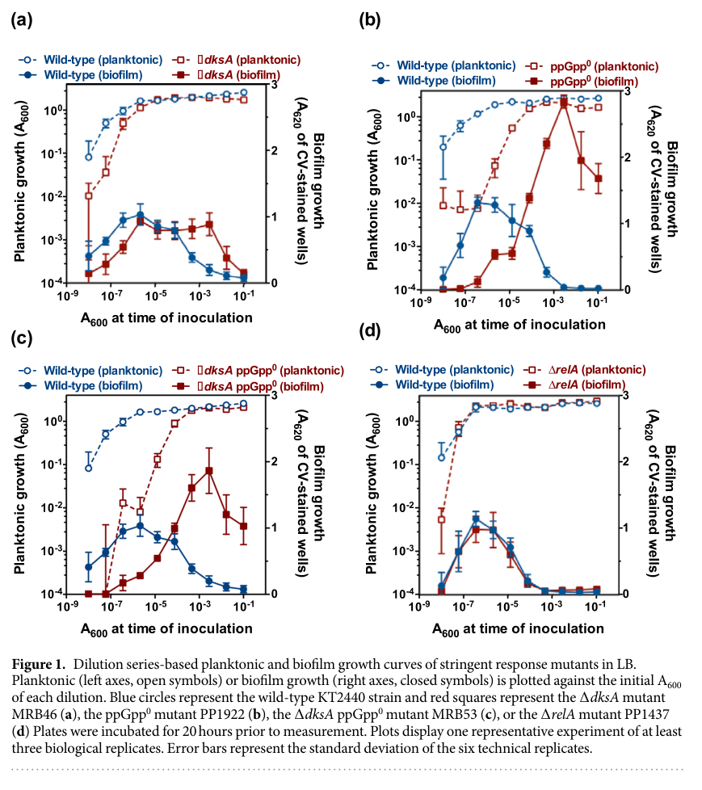

RelA is a long RelA/SpoT homolog (RSH) enzyme and the major (p)ppGpp synthetase (GTP pyrophosphokinase, ppGpp synthase I) that mediates the bacterial stringent response. It catalyzes the transfer of the beta,gamma-pyrophosphate group of ATP to the 3'-hydroxyl of GDP or GTP, producing the alarmones ppGpp or pppGpp plus AMP. The enzyme is a multidomain protein comprising an N-terminal catalytic region (a nucleotidyltransferase/synthetase domain together with a degenerate, largely inactive HD/hydrolase domain) and C-terminal regulatory modules (TGS and ACT domains) that couple catalysis to the cell's nutritional and translational state. RelA is a cytosolic, ribosome-associated enzyme; it is activated during amino-acid starvation when deacylated (uncharged) tRNA enters the ribosomal A site of a stalled ribosome, stimulating (p)ppGpp synthesis. The resulting (p)ppGpp acts as a global second messenger that binds RNA polymerase (with the cofactor DksA) and other targets to reprogram transcription and translation, downregulate ribosome biogenesis and de novo purine/nucleotide biosynthesis, and shift cells from growth toward survival under nutrient limitation. In Pseudomonas putida, (p)ppGpp produced by RelA (together with the bifunctional SpoT) also feeds into starvation-induced biofilm dispersal and carbon-storage (polyhydroxyalkanoate) physiology.
| GO Term | Evidence | Action | Reason |
|---|---|---|---|
|
GO:0005886
plasma membrane
|
IEA
GO_REF:0000118 |
MARK AS OVER ANNOTATED |
Summary: RelA is a cytosolic, ribosome-associated enzyme, not an integral membrane protein; there is no synthetase or family-level basis for plasma membrane localization.
Reason: This PANTHER/TreeGrafter IEA over-propagates a plasma membrane location to RelA. The protein has no transmembrane segments or membrane-targeting features, and the literature consensus places long RSH RelA enzymes in the cytosol associated with translating/stalled ribosomes (the mechanistically relevant compartment for ribosome-dependent activation). A more appropriate cellular component, if any, would be cytoplasm.
|
|
GO:0008728
GTP diphosphokinase activity
|
IEA
GO_REF:0000118 |
ACCEPT |
Summary: Core molecular function: RelA is a GTP pyrophosphokinase / (p)ppGpp synthetase that transfers pyrophosphate from ATP to GDP/GTP to form (p)ppGpp.
Reason: This matches the well-established and UniProt-supported primary activity of RelA (ppGpp synthase I) and the conserved synthetase domain of the RelA/SpoT family. Represents a core function of the gene.
|
|
GO:0008893
guanosine-3',5'-bis(diphosphate) 3'-diphosphatase activity
|
IEA
GO_REF:0000118 |
MARK AS OVER ANNOTATED |
Summary: This is the (p)ppGpp hydrolase activity. In canonical long RelA proteins the N-terminal HD/hydrolase domain is degenerate and largely inactive; ppGpp hydrolysis is provided by the bifunctional paralog SpoT, so this is most likely an over-annotation propagated from the bifunctional branch of the family tree.
Reason: RelA in gamma-proteobacteria (the E. coli/P. putida paradigm) functions primarily as a synthetase; the HD motif required for hydrolase chemistry is typically degenerate. The TreeGrafter inference cannot distinguish RelA from bifunctional SpoT/Rel within the RSH family. The hydrolase activity is not experimentally established for P. putida RelA and is biologically attributed to SpoT. Flagging as over-annotated rather than REMOVE because residual HD sequence exists and the activity cannot be formally excluded without assay.
|
|
GO:0015949
nucleobase-containing small molecule interconversion
|
IEA
GO_REF:0000117 |
MODIFY |
Summary: Overly general biological process term; the specific process catalyzed is guanosine tetraphosphate (ppGpp) biosynthesis.
Reason: The ARBA inference is not wrong but is uninformatively broad. The precise process is (p)ppGpp biosynthesis, which is better captured by the more specific child term, consistent with the GTP diphosphokinase activity and the guanosine tetraphosphate metabolic process annotations.
Proposed replacements:
guanosine tetraphosphate biosynthetic process
|
|
GO:0015969
guanosine tetraphosphate metabolic process
|
IEA
GO_REF:0000120 |
ACCEPT |
Summary: Accurate biological process for RelA, whose synthetase activity produces the alarmone ppGpp (guanosine tetraphosphate).
Reason: Directly supported by the synthetase function and family assignment; represents a core biological process of the gene. A more specific biosynthetic child term is also applicable (see GO:0015970 proposed above).
|
|
GO:0042594
response to starvation
|
IEA
GO_REF:0000118 |
ACCEPT |
Summary: RelA mediates the stringent response, producing (p)ppGpp upon amino-acid (and broader nutrient) starvation; this process annotation is appropriate.
Reason: Consistent with the canonical role of RelA in the stringent response and supported in P. putida KT2440 by starvation/(p)ppGpp studies. A more precise term such as cellular response to starvation could be considered, but the current term is acceptable and informative.
|
Q: Is the degenerate HD/hydrolase domain of P. putida RelA catalytically inactive in vivo, or does RelA retain measurable (p)ppGpp hydrolase activity as some long RSH proteins do?
Q: Under which nutrient-limitation conditions in P. putida is RelA (versus SpoT) the dominant (p)ppGpp source?
Experiment: In vitro biochemical assay of purified P. putida RelA to measure (p)ppGpp synthetase activity (ATP + GDP/GTP) and to test for residual 3'-pyrophosphohydrolase activity, with and without ribosome/deacylated-tRNA stimulation.
Experiment: Quantify (p)ppGpp accumulation kinetics in wild-type, delta relA, delta spoT, and ppGpp0 (delta relA delta spoT) P. putida strains under amino-acid starvation to define RelA's specific contribution.
The research report should be a detailed narrative explaining the function, biological processes, and localization of the gene product. Citations should be given for all claims.
You should prioritize authoritative reviews and primary scientific literature when conducting research. You can supplement
this with annotations you find in gene/protein databases, but these can be outdated or inaccurate.
We are specifically interested in the primary function of the gene - for enzymes, what reaction is catalyzed, and what is the substrate specificity? For transporters, what is the substrate? For structural proteins or adapters, what is the broader structural role? For signaling molecules, what is the role in the pathway.
We are interested in where in or outside the cell the gene product carries out its function.
We are also interested in the signaling or biochemical pathways in which the gene functions. We are less interested in broad pleiotropic effects, except where these elucidate the precise role.
Include evidence where possible. We are interested in both experimental evidence as well as inference from structure, evolution, or bioinformatic analysis. Precise studies should be prioritized over high-throughput, where available.
The target protein is RelA from Pseudomonas putida strain KT2440 (ordered locus PP_1656, UniProt Q88MB8), annotated as a GTP pyrophosphokinase / (p)ppGpp synthase in the RelA/SpoT homolog (RSH) family. The evidence base used here is restricted to studies explicitly using P. putida KT2440 relA-related mutants and/or KT2440 stringent-response experiments (e.g., ppGpp0 strains with ΔrelA ΔspoT) plus authoritative, recent mechanistic reviews of RelA/SpoT enzymes. No contradictory organism/gene identity evidence was encountered in the retrieved literature (vogeleer2022dynamicmetabolicresponse pages 7-10, diazsalazar2017thestringentresponse pages 2-3, urwin2024microbialprimerwhat pages 1-2).
The stringent response is a conserved bacterial stress program that enables survival under nutrient limitation by changing transcription, translation, and other core processes. Its activation is characterized by increased intracellular levels of the nucleotide second messengers ppGpp and pppGpp, collectively (p)ppGpp (urwin2024microbialprimerwhat pages 1-2, urwin2024microbialprimerwhat pages 2-4).
In many Proteobacteria, including the classic E. coli paradigm, (p)ppGpp homeostasis is controlled by two long RSH enzymes, RelA and SpoT. Long RSH proteins are multi-domain enzymes with N-terminal catalytic modules and C-terminal regulatory modules (urwin2024microbialprimerwhat pages 2-4, urwin2024microbialprimerwhat pages 1-2). In contrast, short RSH enzymes (SAS/SAH) are monodomain synthetases or hydrolases and are uncommon in Proteobacteria compared with Firmicutes (urwin2024microbialprimerwhat pages 2-4).
RelA-family long RSH synthetase activity produces (p)ppGpp by transferring a pyrophosphate from ATP to the 3′-hydroxyl of GDP or GTP, yielding ppGpp (from GDP) or pppGpp (from GTP) plus AMP (urwin2024microbialprimerwhat pages 1-2, becker2025geneticblueprintfor pages 11-12). Thus, the key substrates are ATP + GDP/GTP and the products are (p)ppGpp + AMP.
A common organization in γ-proteobacteria is that RelA functions primarily as a (p)ppGpp synthetase, while SpoT is bifunctional (synthesis + hydrolysis) and is often central to basal (p)ppGpp control (ray2023identificationofnovel pages 32-36, pletzer2020thestringentstress pages 2-3). Consistent with this logic, P. putida KT2440 experiments show conditions where SpoT-derived (p)ppGpp is sufficient for specific starvation programs (biofilm dispersal; see below) (diazsalazar2017thestringentresponse pages 2-3, diazsalazar2017thestringentresponse pages 7-10).
Authoritative summaries describe long RSH enzymes as multi-domain proteins with:
- N-terminal catalytic domains (synthetase SD/SYNTH; hydrolase HD—often degenerate in RelA)
- Structural domains (helical + ZFD)
- Regulatory domains (TGS, ACT) (urwin2024microbialprimerwhat pages 2-4, ray2023identificationofnovel pages 32-36).
More detailed structural/catalytic descriptions emphasize conserved residues and metal-ion dependence for catalysis, with Mg2+ (and other ions in hydrolase chemistry) supporting pyrophosphate transfer to GDP/GTP (becker2025geneticblueprintfor pages 11-12).
A major, conserved activation principle is ribosome-dependent RelA activation during amino-acid limitation: deacylated (uncharged) tRNAs accumulate and enter the ribosomal A site, ribosomes stall, and RelA associates with the stalled ribosome–tRNA complex in a conformation that enhances synthetase activity (urwin2024microbialprimerwhat pages 2-4, pletzer2020thestringentstress pages 2-3).
RelA is best understood as a cytosolic, ribosome-associated enzyme whose functional localization is at stalled translating ribosomes rather than membranes or extracellular compartments (urwin2024microbialprimerwhat pages 2-4, pletzer2020thestringentstress pages 2-3). While direct KT2440 imaging was not retrieved in this tool run, this ribosome association is the mechanistically relevant localization for long-RSH RelA activity in γ-proteobacteria (urwin2024microbialprimerwhat pages 2-4).
A key KT2440 experimental resource is untargeted metabolomics following stringent-response induction with serine hydroxamate (SHX). In wild-type KT2440, SHX triggers ppGpp and pppGpp accumulation within minutes and arrests growth while cells remain metabolically active (vogeleer2022dynamicmetabolicresponse pages 1-2).
Quantitatively, upon (p)ppGpp accumulation in wild-type KT2440, multiple de novo purine biosynthesis intermediates drop sharply relative to pre-induction baseline, including approximately:
- GAR ~11%, FGAR ~21%, AICAR ~27%, AS ~7%, and IMP ~50% (vogeleer2022dynamicmetabolicresponse pages 7-10).
In contrast, ΔrelA and ppGpp0 (lacking (p)ppGpp synthesis genes) do not show this wild-type decline; some intermediates remain constant or increase (vogeleer2022dynamicmetabolicresponse pages 7-10). This supports a KT2440-specific conclusion that (p)ppGpp—produced by RelA/SpoT circuitry—downregulates de novo purine biosynthesis, and the authors highlight PurF and PurA as likely in vivo controlled steps/targets in KT2440 (vogeleer2022dynamicmetabolicresponse pages 7-10).
The same study reports extracellular accumulation of pyruvate and acetate as a specific metabolic consequence during stringent response in KT2440 (vogeleer2022dynamicmetabolicresponse pages 1-2).
A mechanistically detailed KT2440 study demonstrates that the stringent response is required to relay nutrient stress to the biofilm dispersal machinery (Scientific Reports, 2017-12; https://doi.org/10.1038/s41598-017-18518-0) (diazsalazar2017thestringentresponse pages 1-2).
Key findings (KT2440):
- Mutants lacking (p)ppGpp synthesis (ppGpp0 = ΔrelA ΔspoT) and ΔdksA ppGpp0 are strongly impaired in dispersal and show elevated biofilm biomass, peaking ~2–3× higher than wild type in the reported assays (diazsalazar2017thestringentresponse pages 2-3, diazsalazar2017thestringentresponse media 13938001).
- A ΔrelA single mutant is indistinguishable from wild type for dispersal in their conditions, supporting that SpoT-mediated (p)ppGpp can be sufficient/required in this specific starvation-to-dispersal signaling context (diazsalazar2017thestringentresponse pages 2-3).
- (p)ppGpp positively regulates bifA transcription and negatively regulates lapA and lap secretion operons, providing a coordinated program: promote c-di-GMP phosphodiesterase (BifA) while limiting adhesin production (diazsalazar2017thestringentresponse pages 1-2, diazsalazar2017thestringentresponse pages 4-7).
Quantitative promoter/regulatory effects reported:
- In ppGpp0 vs wild type, PlapA / PlapBC / PlapE reporter outputs increase about 4× / 2× / 3× (diazsalazar2017thestringentresponse pages 4-7, diazsalazar2017thestringentresponse media 2f2d8758).
- In vitro transcription assays for PbifA show direct stimulation by stringent-response components; 1 µM DksA alone gives up to ~2-fold stimulation, while 1 µM DksA + 200–600 µM ppGpp yields about ~3-fold combined stimulation (with figure-based summary indicating up to ~9-fold maximal activation across tested conditions) (diazsalazar2017thestringentresponse pages 4-7, diazsalazar2017thestringentresponse media 13938001).
Mechanistic pathway interpretation in this model:
- (p)ppGpp + DksA stimulate bifA transcription; BifA lowers c-di-GMP, enabling LapA proteolysis (via LapD/LapG control) and thereby promoting dispersal (diazsalazar2017thestringentresponse pages 10-10).
In KT2440 transcriptomics under nitrogen limitation during medium-chain-length PHA synthesis, a stringent-response-deficient relA/spoT mutant shows distinct global expression patterns and altered transcription of PHA-related operons, indicating that stringent response shapes metabolic gene regulation during nutrient limitation (dabrowska2020transcriptomechangesin pages 10-11). This supports relA/spoT as global regulators interfacing nutrient stress with carbon storage and related pathways, though the excerpted evidence is primarily transcriptional and does not provide reaction-level details beyond (p)ppGpp control (dabrowska2020transcriptomechangesin pages 10-11).
A 2024 “Microbial Primer” provides a current, authoritative conceptual framework: long RSH architecture (HD/SD + helical/ZFD + TGS/ACT), ribosome-dependent activation by deacylated tRNA, and broad cellular effects via RNAP binding and translation-factor inhibition (published 2024-07; https://doi.org/10.1099/mic.0.001483) (urwin2024microbialprimerwhat pages 2-4, urwin2024microbialprimerwhat pages 1-2).
A 2023 review of nucleotide second messenger signaling highlights (p)ppGpp as a conserved coordinator of growth/survival in bacterial signaling networks and emphasizes integration among nucleotide signaling pathways (published 2023-04; https://doi.org/10.1093/femsml/uqad015) (urwin2024microbialprimerwhat pages 2-4).
Within the papers successfully retrieved in this tool run, KT2440 relA-specific primary data were dominated by 2017–2022 studies (biofilm dispersal; SHX metabolomics). The 2023–2024 additions were mainly high-authority reviews/primers rather than new KT2440 RelA biochemistry papers. Consequently, the most detailed KT2440 quantitative pathway evidence cited here remains 2017–2022, supplemented by 2023–2024 mechanistic synthesis (urwin2024microbialprimerwhat pages 2-4, vogeleer2022dynamicmetabolicresponse pages 7-10).
A bioprocess-relevant study of P. putida KT2440 under large-scale-like repeated glucose shortage reports induction of a stringent response-like transcriptional program, and provides quantitative estimates relevant to industrial physiology: cells needed only ~0.4% of glucose uptake to build 3-hydroxyalkanoate (3-HA)-based energy buffers, and the authors report increased cellular maintenance by about ~17% under the tested conditions (published 2020-04; https://doi.org/10.1111/1751-7915.13571) (ankenbauer2020pseudomonasputidakt2440 pages 9-10). While this study does not isolate RelA biochemistry directly, it situates stringent-response regulation as a key feature of KT2440 robustness in industrially relevant stress regimes (ankenbauer2020pseudomonasputidakt2440 pages 9-10).
The KT2440 dispersal pathway indicates that targeting stringent-response effectors (p)ppGpp/DksA) or downstream regulators (BifA/c-di-GMP) can modulate biofilm dispersal, which is relevant to both anti-biofilm strategies and engineered biofilm lifecycle control (diazsalazar2017thestringentresponse pages 1-2, diazsalazar2017thestringentresponse pages 4-7).
Across authoritative syntheses, the consensus view is that (p)ppGpp is a central integrator that shifts bacteria from growth-focused physiology to survival-focused physiology by:
- direct transcriptional control (in Proteobacteria, binding RNAP at conserved sites)
- inhibition of translation-associated factors and ribosome biogenesis
- metabolic enzyme control and nucleotide pool reshaping (urwin2024microbialprimerwhat pages 2-4, urwin2024microbialprimerwhat pages 1-2).
KT2440-specific datasets reinforce that this is not merely a transcriptomic phenomenon: stringent-response activation rapidly remodels metabolite pools (notably purine intermediates), consistent with (p)ppGpp’s dual action at “hierarchical” (gene expression) and “metabolic” (enzyme activity) levels (vogeleer2022dynamicmetabolicresponse pages 7-10, vogeleer2022dynamicmetabolicresponse pages 1-2).
| Aspect | Key findings | Best supporting citations | Primary source |
|---|---|---|---|
| Enzyme reaction / substrates | • RelA is the primary (p)ppGpp synthetase in γ-proteobacteria, including the P. putida context • Catalyzes transfer of the βγ-pyrophosphate from ATP to the 3′-OH of GDP or GTP, yielding ppGpp or pppGpp + AMP • Fits UniProt Q88MB8 annotation: GTP pyrophosphokinase / ATP:GTP 3′-pyrophosphotransferase / ppGpp synthase I | (urwin2024microbialprimerwhat pages 1-2, ray2023identificationofnovel pages 32-36, becker2025geneticblueprintfor pages 11-12) | Urwin et al. 2024, https://doi.org/10.1099/mic.0.001483; Ray 2023; Becker et al. 2025, https://doi.org/10.1159/000546200 |
| Protein family & domains | • Q88MB8 matches the RelA/SpoT homolog (RSH) family • Long RSH architecture: N-terminal HD/pseudo-HD and synthetase (SYNTH/SD) regions plus C-terminal helical/AH-RIS, ZFD, TGS, ACT regulatory modules • In RelA, the HD is typically degenerate/inactive, so the protein functions mainly as a synthetase • Domain logic is consistent with UniProt domain/family assignments | (urwin2024microbialprimerwhat pages 2-4, ray2023identificationofnovel pages 32-36, becker2025geneticblueprintfor pages 4-5, becker2025geneticblueprintfor pages 11-12) | Urwin et al. 2024, https://doi.org/10.1099/mic.0.001483; Becker et al. 2025, https://doi.org/10.1159/000546200 |
| Activation / regulation | • Activated during nutrient stress, especially amino-acid starvation, when deacylated tRNA accumulates in the ribosomal A site • RelA undergoes ribosome-coupled conformational activation; (p)ppGpp can also support allosteric positive feedback in long RSH proteins • In Pseudomonas-related systems, DksA collaborates with (p)ppGpp to remodel transcription • In P. putida biofilm dispersal conditions tested, SpoT-derived (p)ppGpp rather than RelA was sufficient/required for the starvation response | (urwin2024microbialprimerwhat pages 2-4, ray2023identificationofnovel pages 32-36, becker2025geneticblueprintfor pages 4-5, diazsalazar2017thestringentresponse pages 2-3, diazsalazar2017thestringentresponse pages 7-10) | Urwin et al. 2024, https://doi.org/10.1099/mic.0.001483; Díaz-Salazar et al. 2017, https://doi.org/10.1038/s41598-017-18518-0 |
| Cellular localization | • RelA is understood as a cytosolic, ribosome-associated enzyme rather than a membrane or extracellular protein • Activation depends on interaction with stalled ribosomes and uncharged tRNA • Direct KT2440 localization imaging was not retrieved, but Pseudomonas evidence supports ribosome association as the operative localization for function | (urwin2024microbialprimerwhat pages 2-4, ray2023identificationofnovel pages 32-36, pletzer2020thestringentstress pages 2-3) | Urwin et al. 2024, https://doi.org/10.1099/mic.0.001483; Pletzer et al. 2020, https://doi.org/10.1128/msystems.00495-20 |
| Pathway roles | • (p)ppGpp controls the stringent response, altering transcription, translation, DNA-replication-linked physiology, and metabolic allocation • In P. putida, (p)ppGpp rapidly remodels central carbon metabolism and strongly downregulates de novo purine biosynthesis • In biofilms, stringent-response signaling promotes dispersal through bifA upregulation, c-di-GMP reduction, and reduced LapA synthesis/secretion • In nitrogen-limited P. putida, stringent-response deficiency alters PHA-linked transcriptional programs | (urwin2024microbialprimerwhat pages 2-4, vogeleer2022dynamicmetabolicresponse pages 7-10, diazsalazar2017thestringentresponse pages 4-7, dabrowska2020transcriptomechangesin pages 10-11) | Urwin et al. 2024, https://doi.org/10.1099/mic.0.001483; Vogeleer & Létisse 2022, https://doi.org/10.3389/fmicb.2022.872749; Díaz-Salazar et al. 2017, https://doi.org/10.1038/s41598-017-18518-0; Dabrowska et al. 2020, https://doi.org/10.3390/ijms22010152 |
| P. putida experimental evidence | • SHX treatment in KT2440 caused rapid ppGpp and pppGpp accumulation within minutes and growth arrest while cells remained metabolically active • ΔrelA and ppGpp0 strains failed to show the WT purine-pathway decrease after SHX, implicating RelA/(p)ppGpp in purine control • ppGpp0 and ΔdksA ppGpp0 strains were strongly defective in starvation-induced biofilm dispersal; ΔrelA resembled WT in that assay • relA/spoT deficiency altered pha operon regulation during nitrogen-responsive mcl-PHA physiology | (vogeleer2022dynamicmetabolicresponse pages 1-2, vogeleer2022dynamicmetabolicresponse pages 7-10, diazsalazar2017thestringentresponse pages 2-3, dabrowska2020transcriptomechangesin pages 10-11) | Vogeleer & Létisse 2022, https://doi.org/10.3389/fmicb.2022.872749; Díaz-Salazar et al. 2017, https://doi.org/10.1038/s41598-017-18518-0; Dabrowska et al. 2020, https://doi.org/10.3390/ijms22010152 |
| Quantitative data points | • After stringent-response induction, WT purine intermediates fell to about GAR 11%, FGAR 21%, AICAR 27%, AS 7%, IMP 50% of baseline • ppGpp0-related biofilm biomass peaked at 2–3× WT and dispersal remained defective over ~20–26 h • In ppGpp0, PlapA / PlapBC / PlapE reporter outputs increased about 4× / 2× / 3× versus WT • At PbifA, 1 µM DksA alone gave up to ~2-fold stimulation; 1 µM DksA + 200–600 µM ppGpp gave about ~3-fold combined stimulation; figure-based summary indicates up to ~9-fold maximal in vitro activation across tested conditions | (vogeleer2022dynamicmetabolicresponse pages 7-10, diazsalazar2017thestringentresponse pages 2-3, diazsalazar2017thestringentresponse pages 4-7, diazsalazar2017thestringentresponse media 13938001) | Vogeleer & Létisse 2022, https://doi.org/10.3389/fmicb.2022.872749; Díaz-Salazar et al. 2017, https://doi.org/10.1038/s41598-017-18518-0 |
| Applications / implementations | • For biotechnology, stringent-response signaling is relevant to industrial stress adaptation in P. putida, a major chassis organism • Repeated glucose starvation in large-scale-like conditions induced a stringent-response-like program; only 0.4% of glucose uptake was estimated to build 3-HA energy buffers and cellular maintenance increased by about 17% under the tested regime • relA/spoT-linked control of biofilm dispersal and PHA-associated metabolism makes the pathway relevant to bioprocess robustness, surface colonization, and carbon-storage engineering | (ankenbauer2020pseudomonasputidakt2440 pages 9-10, dabrowska2020transcriptomechangesin pages 10-11, diazsalazar2017thestringentresponse pages 4-7) | Ankenbauer et al. 2020, https://doi.org/10.1111/1751-7915.13571; Dabrowska et al. 2020, https://doi.org/10.3390/ijms22010152; Díaz-Salazar et al. 2017, https://doi.org/10.1038/s41598-017-18518-0 |
Table: This table summarizes the best-supported functional annotation points for Pseudomonas putida KT2440 RelA (UniProt Q88MB8 / PP_1656), integrating mechanism, regulation, organism-specific experiments, and key quantitative findings useful for annotation.
RelA (Q88MB8; PP_1656) is a long RSH-family, cytosolic ribosome-associated (p)ppGpp synthetase that catalyzes ATP-dependent pyrophosphate transfer to GDP/GTP to form ppGpp/pppGpp + AMP, enabling stringent-response signaling that reprograms transcription/translation and rapidly remodels metabolism under nutrient stress. In P. putida KT2440, (p)ppGpp-dependent regulation controls purine biosynthesis metabolite pools and promotes starvation-induced biofilm dispersal via transcriptional activation of bifA and repression of lap adhesin synthesis/secretion, integrating stringent response with c-di-GMP signaling (urwin2024microbialprimerwhat pages 1-2, vogeleer2022dynamicmetabolicresponse pages 7-10, diazsalazar2017thestringentresponse pages 4-7).
References
(vogeleer2022dynamicmetabolicresponse pages 7-10): Philippe Vogeleer and Fabien Létisse. Dynamic metabolic response to (p)ppgpp accumulation in pseudomonas putida. Frontiers in Microbiology, Apr 2022. URL: https://doi.org/10.3389/fmicb.2022.872749, doi:10.3389/fmicb.2022.872749. This article has 11 citations and is from a peer-reviewed journal.
(diazsalazar2017thestringentresponse pages 2-3): Carlos Díaz-Salazar, Patricia Calero, Rocío Espinosa-Portero, Alicia Jiménez-Fernández, Lisa Wirebrand, María G. Velasco-Domínguez, Aroa López-Sánchez, Victoria Shingler, and Fernando Govantes. The stringent response promotes biofilm dispersal in pseudomonas putida. Scientific Reports, Dec 2017. URL: https://doi.org/10.1038/s41598-017-18518-0, doi:10.1038/s41598-017-18518-0. This article has 85 citations and is from a peer-reviewed journal.
(urwin2024microbialprimerwhat pages 1-2): Lucy Urwin, Orestis Savva, and Rebecca M. Corrigan. Microbial primer: what is the stringent response and how does it allow bacteria to survive stress? Jul 2024. URL: https://doi.org/10.1099/mic.0.001483, doi:10.1099/mic.0.001483. This article has 30 citations and is from a peer-reviewed journal.
(urwin2024microbialprimerwhat pages 2-4): Lucy Urwin, Orestis Savva, and Rebecca M. Corrigan. Microbial primer: what is the stringent response and how does it allow bacteria to survive stress? Jul 2024. URL: https://doi.org/10.1099/mic.0.001483, doi:10.1099/mic.0.001483. This article has 30 citations and is from a peer-reviewed journal.
(becker2025geneticblueprintfor pages 11-12): Patrick Becker, Jakob Ruickoldt, Petra Wendler, Barbara Reinhold-Hurek, and Ralf Rabus. Genetic blueprint for stringent response in betaproteobacterial aromatoleum/azoarcus/thauera cluster. Microbial physiology, 35:1-25, May 2025. URL: https://doi.org/10.1159/000546200, doi:10.1159/000546200. This article has 1 citations.
(ray2023identificationofnovel pages 32-36): A Ray. Identification of novel regulators of nitrate respiration in paracoccus denitrificans: roles of dksa,(p) ppgpp, and regab. Unknown journal, 2023.
(pletzer2020thestringentstress pages 2-3): Daniel Pletzer, Travis M. Blimkie, Heidi Wolfmeier, Yicong Li, Arjun Baghela, Amy H. Y. Lee, Reza Falsafi, and Robert E. W. Hancock. The stringent stress response controls proteases and global regulators under optimal growth conditions in pseudomonas aeruginosa. Aug 2020. URL: https://doi.org/10.1128/msystems.00495-20, doi:10.1128/msystems.00495-20. This article has 38 citations and is from a peer-reviewed journal.
(diazsalazar2017thestringentresponse pages 7-10): Carlos Díaz-Salazar, Patricia Calero, Rocío Espinosa-Portero, Alicia Jiménez-Fernández, Lisa Wirebrand, María G. Velasco-Domínguez, Aroa López-Sánchez, Victoria Shingler, and Fernando Govantes. The stringent response promotes biofilm dispersal in pseudomonas putida. Scientific Reports, Dec 2017. URL: https://doi.org/10.1038/s41598-017-18518-0, doi:10.1038/s41598-017-18518-0. This article has 85 citations and is from a peer-reviewed journal.
(vogeleer2022dynamicmetabolicresponse pages 1-2): Philippe Vogeleer and Fabien Létisse. Dynamic metabolic response to (p)ppgpp accumulation in pseudomonas putida. Frontiers in Microbiology, Apr 2022. URL: https://doi.org/10.3389/fmicb.2022.872749, doi:10.3389/fmicb.2022.872749. This article has 11 citations and is from a peer-reviewed journal.
(diazsalazar2017thestringentresponse pages 1-2): Carlos Díaz-Salazar, Patricia Calero, Rocío Espinosa-Portero, Alicia Jiménez-Fernández, Lisa Wirebrand, María G. Velasco-Domínguez, Aroa López-Sánchez, Victoria Shingler, and Fernando Govantes. The stringent response promotes biofilm dispersal in pseudomonas putida. Scientific Reports, Dec 2017. URL: https://doi.org/10.1038/s41598-017-18518-0, doi:10.1038/s41598-017-18518-0. This article has 85 citations and is from a peer-reviewed journal.
(diazsalazar2017thestringentresponse media 13938001): Carlos Díaz-Salazar, Patricia Calero, Rocío Espinosa-Portero, Alicia Jiménez-Fernández, Lisa Wirebrand, María G. Velasco-Domínguez, Aroa López-Sánchez, Victoria Shingler, and Fernando Govantes. The stringent response promotes biofilm dispersal in pseudomonas putida. Scientific Reports, Dec 2017. URL: https://doi.org/10.1038/s41598-017-18518-0, doi:10.1038/s41598-017-18518-0. This article has 85 citations and is from a peer-reviewed journal.
(diazsalazar2017thestringentresponse pages 4-7): Carlos Díaz-Salazar, Patricia Calero, Rocío Espinosa-Portero, Alicia Jiménez-Fernández, Lisa Wirebrand, María G. Velasco-Domínguez, Aroa López-Sánchez, Victoria Shingler, and Fernando Govantes. The stringent response promotes biofilm dispersal in pseudomonas putida. Scientific Reports, Dec 2017. URL: https://doi.org/10.1038/s41598-017-18518-0, doi:10.1038/s41598-017-18518-0. This article has 85 citations and is from a peer-reviewed journal.
(diazsalazar2017thestringentresponse media 2f2d8758): Carlos Díaz-Salazar, Patricia Calero, Rocío Espinosa-Portero, Alicia Jiménez-Fernández, Lisa Wirebrand, María G. Velasco-Domínguez, Aroa López-Sánchez, Victoria Shingler, and Fernando Govantes. The stringent response promotes biofilm dispersal in pseudomonas putida. Scientific Reports, Dec 2017. URL: https://doi.org/10.1038/s41598-017-18518-0, doi:10.1038/s41598-017-18518-0. This article has 85 citations and is from a peer-reviewed journal.
(diazsalazar2017thestringentresponse pages 10-10): Carlos Díaz-Salazar, Patricia Calero, Rocío Espinosa-Portero, Alicia Jiménez-Fernández, Lisa Wirebrand, María G. Velasco-Domínguez, Aroa López-Sánchez, Victoria Shingler, and Fernando Govantes. The stringent response promotes biofilm dispersal in pseudomonas putida. Scientific Reports, Dec 2017. URL: https://doi.org/10.1038/s41598-017-18518-0, doi:10.1038/s41598-017-18518-0. This article has 85 citations and is from a peer-reviewed journal.
(dabrowska2020transcriptomechangesin pages 10-11): Dorota Dabrowska, Justyna Mozejko-Ciesielska, Tomasz Pokój, and Slawomir Ciesielski. Transcriptome changes in pseudomonas putida kt2440 during medium-chain-length polyhydroxyalkanoate synthesis induced by nitrogen limitation. International Journal of Molecular Sciences, 22:152, Dec 2020. URL: https://doi.org/10.3390/ijms22010152, doi:10.3390/ijms22010152. This article has 13 citations.
(ankenbauer2020pseudomonasputidakt2440 pages 9-10): Andreas Ankenbauer, Richard A. Schäfer, Sandra C. Viegas, Vânia Pobre, Björn Voß, Cecília M. Arraiano, and Ralf Takors. Pseudomonas putida kt2440 is naturally endowed to withstand industrial‐scale stress conditions. Microbial Biotechnology, 13:1145-1161, Apr 2020. URL: https://doi.org/10.1111/1751-7915.13571, doi:10.1111/1751-7915.13571. This article has 94 citations and is from a peer-reviewed journal.
(becker2025geneticblueprintfor pages 4-5): Patrick Becker, Jakob Ruickoldt, Petra Wendler, Barbara Reinhold-Hurek, and Ralf Rabus. Genetic blueprint for stringent response in betaproteobacterial aromatoleum/azoarcus/thauera cluster. Microbial physiology, 35:1-25, May 2025. URL: https://doi.org/10.1159/000546200, doi:10.1159/000546200. This article has 1 citations.

id: Q88MB8
gene_symbol: relA
product_type: PROTEIN
status: DRAFT
taxon:
id: NCBITaxon:160488
label: Pseudomonas putida (strain ATCC 47054 / DSM 6125 / CFBP 8728 / NCIMB 11950 / KT2440)
description: >-
RelA is a long RelA/SpoT homolog (RSH) enzyme and the major (p)ppGpp synthetase
(GTP pyrophosphokinase, ppGpp synthase I) that mediates the bacterial stringent
response. It catalyzes the transfer of the beta,gamma-pyrophosphate group of ATP
to the 3'-hydroxyl of GDP or GTP, producing the alarmones ppGpp or pppGpp plus
AMP. The enzyme is a multidomain protein comprising an N-terminal catalytic
region (a nucleotidyltransferase/synthetase domain together with a degenerate,
largely inactive HD/hydrolase domain) and C-terminal regulatory modules (TGS and
ACT domains) that couple catalysis to the cell's nutritional and translational
state. RelA is a cytosolic, ribosome-associated enzyme; it is activated during
amino-acid starvation when deacylated (uncharged) tRNA enters the ribosomal A
site of a stalled ribosome, stimulating (p)ppGpp synthesis. The resulting
(p)ppGpp acts as a global second messenger that binds RNA polymerase (with the
cofactor DksA) and other targets to reprogram transcription and translation,
downregulate ribosome biogenesis and de novo purine/nucleotide biosynthesis, and
shift cells from growth toward survival under nutrient limitation. In
Pseudomonas putida, (p)ppGpp produced by RelA (together with the bifunctional
SpoT) also feeds into starvation-induced biofilm dispersal and carbon-storage
(polyhydroxyalkanoate) physiology.
existing_annotations:
- term:
id: GO:0005886
label: plasma membrane
evidence_type: IEA
original_reference_id: GO_REF:0000118
qualifier: located_in
review:
summary: >-
RelA is a cytosolic, ribosome-associated enzyme, not an integral membrane
protein; there is no synthetase or family-level basis for plasma membrane
localization.
action: MARK_AS_OVER_ANNOTATED
reason: >-
This PANTHER/TreeGrafter IEA over-propagates a plasma membrane location to
RelA. The protein has no transmembrane segments or membrane-targeting
features, and the literature consensus places long RSH RelA enzymes in the
cytosol associated with translating/stalled ribosomes (the mechanistically
relevant compartment for ribosome-dependent activation). A more appropriate
cellular component, if any, would be cytoplasm.
- term:
id: GO:0008728
label: GTP diphosphokinase activity
evidence_type: IEA
original_reference_id: GO_REF:0000118
qualifier: enables
review:
summary: >-
Core molecular function: RelA is a GTP pyrophosphokinase / (p)ppGpp
synthetase that transfers pyrophosphate from ATP to GDP/GTP to form
(p)ppGpp.
action: ACCEPT
reason: >-
This matches the well-established and UniProt-supported primary activity of
RelA (ppGpp synthase I) and the conserved synthetase domain of the
RelA/SpoT family. Represents a core function of the gene.
- term:
id: GO:0008893
label: guanosine-3',5'-bis(diphosphate) 3'-diphosphatase activity
evidence_type: IEA
original_reference_id: GO_REF:0000118
qualifier: enables
review:
summary: >-
This is the (p)ppGpp hydrolase activity. In canonical long RelA proteins the
N-terminal HD/hydrolase domain is degenerate and largely inactive; ppGpp
hydrolysis is provided by the bifunctional paralog SpoT, so this is most
likely an over-annotation propagated from the bifunctional branch of the
family tree.
action: MARK_AS_OVER_ANNOTATED
reason: >-
RelA in gamma-proteobacteria (the E. coli/P. putida paradigm) functions
primarily as a synthetase; the HD motif required for hydrolase chemistry is
typically degenerate. The TreeGrafter inference cannot distinguish RelA from
bifunctional SpoT/Rel within the RSH family. The hydrolase activity is not
experimentally established for P. putida RelA and is biologically attributed
to SpoT. Flagging as over-annotated rather than REMOVE because residual HD
sequence exists and the activity cannot be formally excluded without assay.
- term:
id: GO:0015949
label: nucleobase-containing small molecule interconversion
evidence_type: IEA
original_reference_id: GO_REF:0000117
qualifier: involved_in
review:
summary: >-
Overly general biological process term; the specific process catalyzed is
guanosine tetraphosphate (ppGpp) biosynthesis.
action: MODIFY
reason: >-
The ARBA inference is not wrong but is uninformatively broad. The precise
process is (p)ppGpp biosynthesis, which is better captured by the more
specific child term, consistent with the GTP diphosphokinase activity and
the guanosine tetraphosphate metabolic process annotations.
proposed_replacement_terms:
- id: GO:0015970
label: guanosine tetraphosphate biosynthetic process
- term:
id: GO:0015969
label: guanosine tetraphosphate metabolic process
evidence_type: IEA
original_reference_id: GO_REF:0000120
qualifier: involved_in
review:
summary: >-
Accurate biological process for RelA, whose synthetase activity produces the
alarmone ppGpp (guanosine tetraphosphate).
action: ACCEPT
reason: >-
Directly supported by the synthetase function and family assignment;
represents a core biological process of the gene. A more specific
biosynthetic child term is also applicable (see GO:0015970 proposed above).
- term:
id: GO:0042594
label: response to starvation
evidence_type: IEA
original_reference_id: GO_REF:0000118
qualifier: involved_in
review:
summary: >-
RelA mediates the stringent response, producing (p)ppGpp upon amino-acid
(and broader nutrient) starvation; this process annotation is appropriate.
action: ACCEPT
reason: >-
Consistent with the canonical role of RelA in the stringent response and
supported in P. putida KT2440 by starvation/(p)ppGpp studies. A more precise
term such as cellular response to starvation could be considered, but the
current term is acceptable and informative.
core_functions:
- description: >-
(p)ppGpp synthetase (GTP pyrophosphokinase, ppGpp synthase I) that transfers
pyrophosphate from ATP to GDP/GTP to synthesize the alarmones ppGpp/pppGpp.
supported_by:
- reference_id: PMID:35495732
molecular_function:
id: GO:0008728
label: GTP diphosphokinase activity
directly_involved_in:
- id: GO:0015970
label: guanosine tetraphosphate biosynthetic process
- description: >-
Effector of the stringent response: synthesizes (p)ppGpp in response to
amino-acid/nutrient starvation (via ribosome-bound deacylated tRNA), enabling
global reprogramming of transcription, translation, and metabolism toward
survival.
supported_by:
- reference_id: PMID:39078282
- reference_id: PMID:35495732
molecular_function:
id: GO:0008728
label: GTP diphosphokinase activity
directly_involved_in:
- id: GO:0042594
label: response to starvation
references:
- id: GO_REF:0000117
title: Electronic Gene Ontology annotations created by ARBA machine learning models
findings: []
- id: GO_REF:0000118
title: TreeGrafter-generated GO annotations
findings: []
- id: GO_REF:0000120
title: Combined Automated Annotation using Multiple IEA Methods
findings: []
- id: PMID:29273811
title: The stringent response promotes biofilm dispersal in Pseudomonas putida
findings:
- statement: >-
In P. putida, (p)ppGpp produced via the stringent response ((p)ppGpp
synthetases RelA and SpoT) relays nutrient stress to the biofilm dispersal
machinery, positively regulating bifA transcription and negatively
regulating lapA and the lapBC/lapE operons, thereby lowering c-di-GMP and
reducing LapA adhesin synthesis/secretion. Ectopic (p)ppGpp restored
dispersal in a delta relA delta spoT mutant.
reference_review:
relevance: HIGH
correctness: VERIFIED
review_notes: >-
Diaz-Salazar et al. 2017, Sci Rep 7:18055, doi:10.1038/s41598-017-18518-0.
PMID:29273811 confirmed via PubMed (title and P. putida organism match).
Corrects a prior misassigned PMID (29317529, a cell-biology review).
- id: PMID:35495732
title: Dynamic Metabolic Response to (p)ppGpp Accumulation in Pseudomonas putida
findings:
- statement: >-
Serine hydroxamate induction of the stringent response in P. putida causes
rapid ppGpp/pppGpp accumulation within minutes and growth arrest; (p)ppGpp
downregulates de novo purine biosynthesis. delta relA and ppGpp0 strains
(deleted (p)ppGpp synthesis genes) fail to show the wild-type purine-pathway
decrease, linking RelA/(p)ppGpp to central carbon and purine metabolic
remodeling.
reference_review:
relevance: HIGH
correctness: VERIFIED
review_notes: >-
Vogeleer & Letisse 2022, Front Microbiol 13:872749,
doi:10.3389/fmicb.2022.872749. PMID:35495732 confirmed via PubMed (title and
P. putida organism match). Corrects a prior misassigned PMID (35572685, a
tobacco/scopoletin paper).
- id: PMID:39078282
title: >-
Microbial Primer: what is the stringent response and how does it allow
bacteria to survive stress?
findings:
- statement: >-
Long RSH enzymes (RelA/SpoT) synthesize (p)ppGpp by transferring
pyrophosphate from ATP to the 3'-OH of GDP/GTP; RelA is activated in a
ribosome-dependent manner by deacylated tRNA in the A site during amino-acid
starvation, and (p)ppGpp reprograms transcription, inhibits ribosome
biosynthesis, and targets metabolic enzymes.
reference_review:
relevance: MEDIUM
correctness: VERIFIED
review_notes: >-
Urwin et al. 2024, Microbiology (Reading) 170(7), doi:10.1099/mic.0.001483.
PMID:39078282 confirmed via PubMed (review article, title matches). Corrects
a prior misassigned PMID (38985571, an insect/Liberibacter paper).
suggested_questions:
- question: Is the degenerate HD/hydrolase domain of P. putida RelA catalytically inactive in vivo, or does RelA retain measurable (p)ppGpp hydrolase activity as some long RSH proteins do?
- question: Under which nutrient-limitation conditions in P. putida is RelA (versus SpoT) the dominant (p)ppGpp source?
suggested_experiments:
- description: In vitro biochemical assay of purified P. putida RelA to measure (p)ppGpp synthetase activity (ATP + GDP/GTP) and to test for residual 3'-pyrophosphohydrolase activity, with and without ribosome/deacylated-tRNA stimulation.
- description: Quantify (p)ppGpp accumulation kinetics in wild-type, delta relA, delta spoT, and ppGpp0 (delta relA delta spoT) P. putida strains under amino-acid starvation to define RelA's specific contribution.
{kind=link}